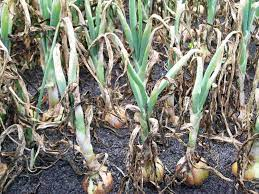

Onion (Allium cepa) is a biennial plant cultivated as an annual for its edible bulb. It belongs to the Alliaceae family, which also includes garlic and leeks. Onions are a staple ingredient in various cuisines globally, valued for their pungent flavor and aromatic properties.
Available in diverse colors and sizes, onions are versatile in the kitchen, adding distinct flavors to salads, soups, stews, and countless other dishes. Understanding the cultivation practices and characteristics of different onion varieties enhances their culinary appeal.
Successful onion cultivation involves adherence to specific practices. Onions thrive in well-drained, fertile soil with a slightly acidic to neutral pH. Planting can be done using seeds, sets, or transplants, depending on regional preferences and climatic conditions.
Onions require full sun exposure for optimal growth. Adequate spacing ensures proper bulb development, and consistent watering, especially during dry periods, is essential for healthy onion plants. Understanding the onion's growth cycle aids in optimizing cultivation practices.
Exploring the diversity of onion varieties opens a world of culinary possibilities. Common varieties include yellow onions, red onions, and white onions. Each variety has its unique flavor profile, making them suitable for different culinary applications.
Sweet onions, such as Vidalia, Walla Walla, and Maui, are prized for their milder taste. Red onions add vibrant color to salads, while white onions, with their pungent flavor, are ideal for cooking and flavoring savory dishes.
The foundation of successful onion cultivation lies in understanding and meeting soil requirements. Onions thrive in well-drained, sandy loam soil enriched with organic matter. Soil preparation should include the addition of compost or well-rotted manure.
Onions are sensitive to waterlogging, emphasizing the importance of well-drained soil to prevent bulb rot. Monitoring soil pH levels within the optimal range of 6.0 - 7.5 contributes to successful onion cultivation.
Protecting onion crops from pests and diseases is integral to ensuring a healthy harvest. Common issues include onion downy mildew, onion white rot, and pink root. Implementing preventive measures, such as crop rotation and proper sanitation, can mitigate these challenges.
Choosing disease-resistant onion varieties and prompt intervention contribute to a thriving onion garden, ensuring a bountiful harvest of flavorful and nutritious onions.
Harvesting onions at the right time is crucial for optimal flavor and storage. When the tops of the onion plants yellow and fall over, it indicates that the onions are ready for harvest. Carefully lift the onions from the soil and allow them to dry in the sun for a few days.
After drying, remove the tops and roots, leaving only a small neck. Onions can be stored in a cool, dry, and well-ventilated place. Mesh bags or crates are suitable for storage, promoting air circulation and preventing mold or rot. Properly stored onions can last for several months.